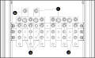

Connect the Power Cables in Top Cable Entry System
-
Connect the power cables:
- Connect the input cables to the X311 (L1, L2, L3, N1) terminals.
- Connect the bypass cables to the X312 (3:3: L1, L2, L3, N)/(3:1: L, N) terminals.
- Connect the output cables to the X313 (3:3: L1, L2, L3, N)/(3:1: L, N) terminals.
- Connect the battery cables to the X314 (B+,B-) terminals.
Figure 2. Front View of the AUX Cabinet — 3:1 Figure 3. Front View of the AUX Cabinet — 3:3 
1 No N if input transformer is installed